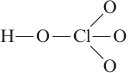
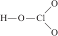
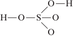
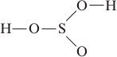
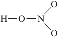

Ossidi, Idrossidi e Ossiacidi
Ossidi
Gli ossidi sono composti binari formati dalla combinzione di uno dei vari elementi (tranne gas nobili e fluoro) con l'ossigeno. Si preparano per reazione diretta dell'elemento con l'ossigeno.
La nomenclatura tradizionale distingue gli ossidi in due gruppi:
ossidi basici (or base anhydrides) (metallo + ossigeno): Na2O, CuO, MgO, CaO.
ossidi acidi (or acid anhydide) (non metallo + ossigeno), CO2, SO2, SiO2.
Amphoteric oxides: show both acidic and basic properties, PbO, Al2O3, ZnO
Acidic oxides
Nonmetal oxides react with water to produce what are known as the oxyacids, or oxoacids, acids containing an NM—O—H unit, where NM = nonmetal. A nonmetal oxide is usually characterized by polar covalent bonds rather than the primarily ionic bonds of a metal oxide. Note that the non-metal element-oxygen (E–O) bond is not broken on dissolution, as the strong, covalent O−E bonds remains intact.
| SO2 | + | H2O | → | H2SO3 | acido solforoso (esiste solo in soluzione) |
| CO2 | + | H2O | → | H2CO3 | |
| SO3 | + | H2O | → | H2SO4 | (acido solforico) |
The structure of H2SO4 is shown below. In this case, the strong, covalent O−S bonds remain intact and the H−O bonds break to produce protons.
Thus when a covalent oxide dissolves in water, an acidic solution forms. These oxides are called acidic oxides.
Acidic oxides are also known as acid anhydride as they are obtained by removing water from the corresponding oxoacid until only the oxide remains; thus CO2 is the anhydride of carbonic acids (H2CO3). Silica SiO2 is the acid anhydride of the very weak silici acid H2SiO3.
Basic oxides
On the other hand, when an ionic oxide dissolves in water, a basic solution results, as shown by the following reactions:
| CaO (s) | + | H2O (l) | → | Ca(OH) (aq) |
| Na2O (s) | + | H2O(l) | → | 2NaOH (aq) |
These reactions can be explained by recognizing that the oxide ion has a high affinity for protons and reacts with water to produce hydroxide ions:
| O2−(aq) | + | H2O+ | ⟶ | 2OH2− (aq) |
Thus the most ionic oxides, such as those of the Group 1A and 2A metals, produce basic solutions when they are dissolved in water. As a result, these oxides are called basic oxides.
Lime (calcium oxide or calcium hydroxide) and limestone (calcium carbonate) are used to neutralise acids in soils.
In questo caso si ha la formazione di soluzioni basiche evidenziate dalle cartine al tornasole (viraggio da rosso ad azzurro in presenza di basi).
Basic oxides are also known as base anhydrides, as they can be obtained by removing water from the corresponding hydroxide.
Ossiacidi (acidi ossigenati)
An oxoacid is an acid containing hydrogen, oxygen, and another element that is usually a nonmetal (often called the central atom). An oxyacid has at least one hydrogen atom attached to an oxygen atom (i.e. at leaast one hydroxy group linked to the central atom) and has the general formula (HO)mXOn. The acid hydrogens are always bonded to oxygen in an oxyacid. Gli ossiacidi derivano dalla reazione fra un ossido acido (anidride) e una o più molecole d’acqua.
In water the oxoacid molecule yields one or more hydrogen ions H+, and an oxoanion. Then names of the oxoacids are related to the names of the corresponding oxoanions. If you known the name of the oxoanion, you can obtain the name of the corresponding acid by replacing the suffic as follows
| Anion suffix | Acid Suffix |
|---|---|
| -ate | -ic |
| -ite | -ous |
For example HNO3, nitric axid contain the oxianion NO3− nitrate ion.
The nitrous acid HNO3, the Nitrite ion NO3−.
The perchloric acid, HClO4, is one of the strongest acids known.
| Oxyacid | Structure | Ka | Oxoanion |
|---|---|---|---|
| HClO4 Perchloric acid |  | Large ~ 107 | ClO4− Perchlorate ion |
| HClO3 Chloric acid |  | ~1 | ClO3− Chlorate ion |
| HClO2 Chlorous acid | H−O−Cl−O | 1.2 x 10−2 | ClO2− Chlorite ion |
| HClO Hypochlorous acid | H−O−Cl | 3.5 x 10−8 | ClO− Hypochlorite ion |
| H2SO4 Sulfuric acid |  | Large | SO42− Sulfate ion |
| H2SO3 Sulfurous acid |  | 1.5 x 10−2 | SO432− Sulfite ion |
| HNO3 Nitric acid |  | Large | NO3− Nitrate ion |
| HNO2 Nitrous acid | H−O−N−O | 4.0 x 10−4 | NO3− Nitrate ion |
Lo zolfo con i numeri di ossidazione +4 e +6 forma i seguenti acidi
SO2 + H2O → H2SO3 acido solforoso (esiste solo in soluzione)
SO3 + H2O → H2SO4 acido solforico
L'Azoto con i numeri di ossidazione +3 e +5 produce i seguenti acidi
N2O3 + H2O → H2N2O4 → 2HNO2 acido nitroso
N2O5 + H2O → H2N2O6 → 2HNO3 acido nitrico
Nomenclatura degli ossiacidi
Nella nomenclatura IUPAC gli ossiacidi vengono denominati con il termine acido aggiungendo il suffisso -ico alla radice del nome del non metallo. Il numero degli atomi di ossigeno presenti nel composto viene precisato con i prefissi monosso, diosso- ecc. Inoltre, per individuare esattamente il composto viene aggiunto il numero di ossidazione del non metallo (questa aggiunta evita equivoci nel caso che esistano più ossiacidi dello stesso non metallo).
Nella nomenclatura tradizionale gli ossiacidi vengono denominati aggiungendo il suffisso -ico alla radice del nome del non metallo. Se esistono due ossiacidi dello stesso non metallo, si ricorre al suffisso -oso per il composto in cui il non metallo ha il n.o. minore, e al suffisso -ico per il composto in cuiil non metallo ha il n.o. maggiore. Se il non metallo forma più di due ossiacidi (quando il non metallo ha quattro n.o diversi), si ricorre al prefisso -ipo e al suffisso -oso per indicare il composto che contiene il non metallo con il n.o. più basso, e al prefisso per- e al suffisso -ico per indicare il composto che contiene il non metallo con il n.o. più alto.
I suffissi ipo ...oso; ...oso; ...ico; per ...ico sono riferiti, in modo crescente, ai diversi n.o. del non metallo.
| Formula | n.o. | Nome tradizionale | Nome IUPAC |
|---|---|---|---|
| H2SO3 | +4 | acido solforoso | acido triossosolforico(IV) |
| H2SO4 | +6 | acido solforoso | acido tetraossosolforico(VI) |
| H2NO2 | +3 | acido nitroso | acido diossonitrico(III) |
| H2NO3 | +5 | acido nitrico | acido triossonitrico(V) |
| H2CO3 | +4 | acido carbonico | acido triossocarbonico(IV) |
| H2PO3 | +3 | acido fosforoso | acido triossofosforico(III) |
| H2PO4 | +5 | acido fosforico | acido tetraossofosforico(V) |
| HClO | +1 | acido ipocloroso | acido ossoclorico(I) |
| HClO2 | +3 | acido cloroso | acido diossoclorico(III) |
| HClO3 | +5 | acido clorico | acido triossoclorico(V) |
| HClO4 | +7 | acido perclorico | acido tetraossoclorico(VII) |
Osservazione. Gli acidi degli elementi del IV e V gruppo A, eccetto carbonio e azoto possono esistere in due forme che differiscono per il loro contenuto d'acqua e vengono denominate mediante i prefissi meta e orto secondo la nomenclatura tradizionale. La forma orto è formalmente costituita dall'unione dell'anidride corrispondente con il maggior numero di molecole di acqua; la forma meta può essere ottenuta da quella orto per sottrazione di una molecola d'acqua. Fa eccezzione l'acido metaperiodico che si ottiene dall'acido ortoperiodico per sottrazione di due molecole d'acqua:
H5IO6 − 2H2O ⟶ HIO4
Ne consegue che in alcuni casi un dato elemento non-metallico può formare più di un ossiacido pur mantenendo lo stesso n.o.
Il Fosforo con i numeri di ossidazione +3 e + 5 forma una serie di acidi che presentano diversi gradi di idratazione. In particolare quando un'anidride si lega con una sola molecola d'acqua l'acido che ne deriva viene indicato facendone precedere il nome dal suffisso meta-. Quando viene legata una seconda molecola d'acqua al meta-acido si forma un acido il cui nome viene preceduto dal prefisso orto-.
P2O3 + H2O → H2P2O4 → 2HPO2 acido metafosforoso
HPO2 + H2O → H3PO3 acido ortofosforoso
P2O5 + H2O → H2P2O6 → 2HPO3 acido metafosforico
HPO3 + H2O → H3PO4 acido ortofosforico
L'acido ortofosforoso, pur avendo 3 idrogeni, è biprotico, ne dissocia cioè solo due. Per questo motivo si ritiene che un idrogeno sia legato direttamente all'atomo di fosforo, piuttosto che ad un ossigeno.
Con il numero di ossidazione +5 il fosforo forma anche l'acido pirofosforico (o difosforico) il quale si forma per disidratazione (perdita di una molecola d'acqua) da due molecole di acido ortofosforico. Per trovarne la formula in maniera più rapida e veloce è sufficiente aggiungere due molecole d'acqua all'anidride fosforica
P2O5 + 2H2O → H4P2O7 acido pirofosforico
Altri esempi sono
SiO2 + 2H2O ⟶ H4SiO4 acido ortosilicico
H4Si4 − 2H2O ⟶ H2SiO3 acido ortosilicico
B2O3 + 3H2O ⟶ 2H3BO3 acido ortoborico
H3BO3 − H2O ⟶ HBO2 acido metaborico
Le forme meta- degli acidi non sono generalmente note come molecoel singole, in quanto hanno la tendenza a polimerizzare: sono noti però i loro sali.
Gli acidi formati con gli elementi appartenenti al V e VI gruppo A possono anche esistere in un'altra forma ottenuta eliminando una molecola d'acqua da due molecoel in un ortoacido. Questi acididi vengono comunemente distiti mediante i prefissi piro- o più precidamente di-.
2H2SO4 − H2O ⟶ H4S2O7 acido pirosolforico (acido disolforico) 2H3PO4 − H2O ⟶ H4P2O7 acido pirofosforico (acido difosforico)
Idrossidi
Gli idrossidi sono composti ionici ternari formati da un catione metallico (MX+) e da tanti ioni idrossido (OH-) quanti ne occorrosno per neutralizzare la carica del catione. Si preparano facendo reagire gli ossidi basici con l'acqua
CaO + H2O → Ca(OH)2
Generalmente per questa classe di composti si utilizza la nomenclatura tradizionale e il nome si ottiene sostituendo la parola idrossido a quella dell'ossido corrispondente.
Ossidi o anidridi
Secondo le regole di nomenclatura redatte dalla IUPAC, tutti i composti binari con l’ossigeno (ad eccezione di quello con il fluoro) devono essere chiamati ossidi. Anche se improprio, l’uso del termine anidride permette però di distinguere, fra tutti gli ossidi, quelli da cui derivano i più comuni ossiacidi. Infatti, il termine anidride, che significa ''senza acqua'', deriva dal fatto che può essere formata a partire da un acido tramite rimozione di acqua.
Si riportano di seguito tutti gli ossidi dell’azoto e i corrispondenti ossiacidi:
| OSSIDI | OSSIACIDI | ||||
|---|---|---|---|---|---|
| n.o. | formula | nomi più frequenti | formula | nomi | |
| +1 | N2O | ossido di azoto(I) | protossido di azoto | H2N2O2 | acido iponitroso |
| + 2 | NO | ossido di azoto | ossido nitrico | ||
| + 3 | N2O3 | ossido di azoto(III) | anidride nitrosa | HNO2 | acido nitroso |
| + 4 | NO2 | diossido di azoto | ipoazotide (N2O4) | ||
| + 5 | N2O5 | ossido di azoto(V) | anidride nitrica | HNO3 | acido nitrico |
Come puoi notare, esiste anche l’acido iponitroso in cui l’atomo di azoto ha numero di ossidazione +1. Questo acido, però, deriva soltanto formalmente dal protossido di azoto perché in realtà protossido di azoto e acqua non reagiscono tra di loro. Il protossido di azoto è quindi un’anidride formale, mentre le altre due si dicono anidridi acide proprio perché disciolte in acqua formano i corrispondenti ossiacidi.